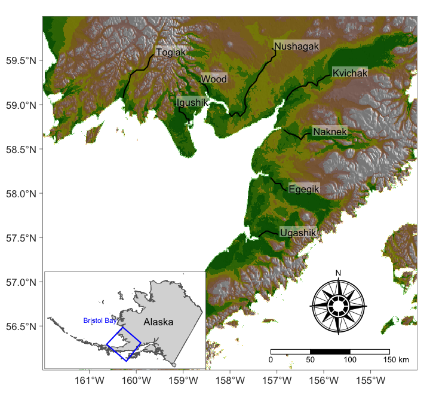
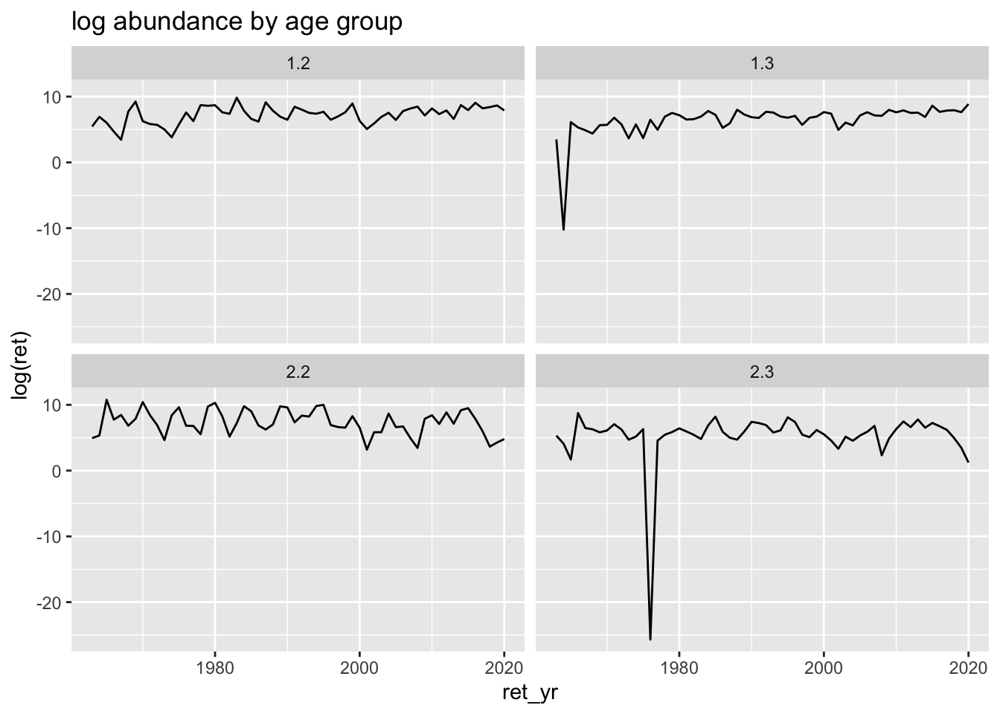
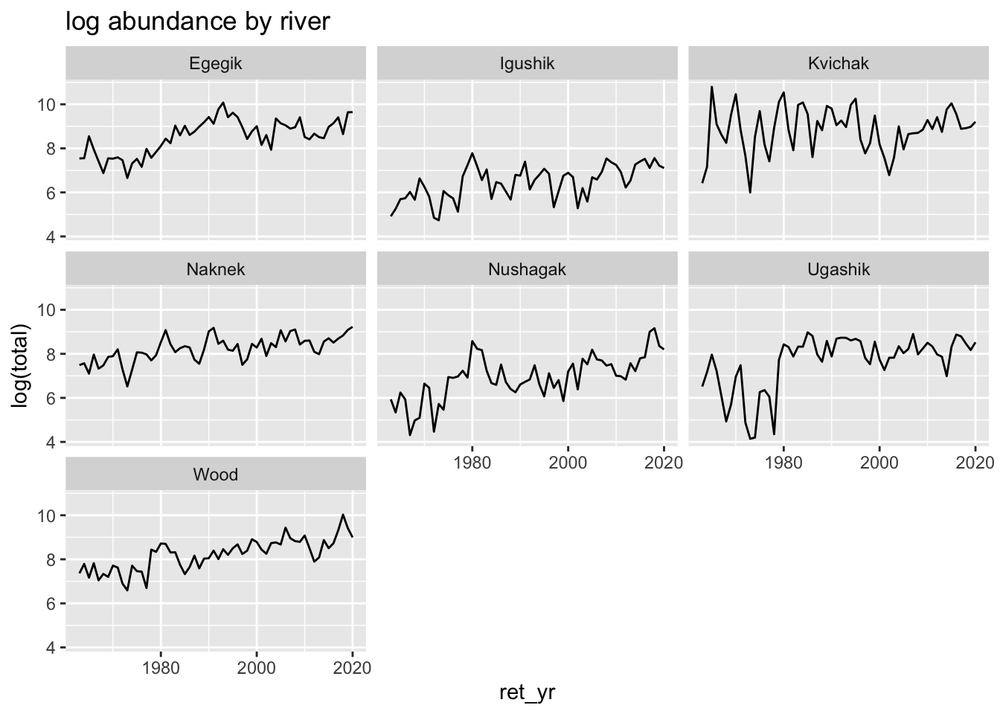
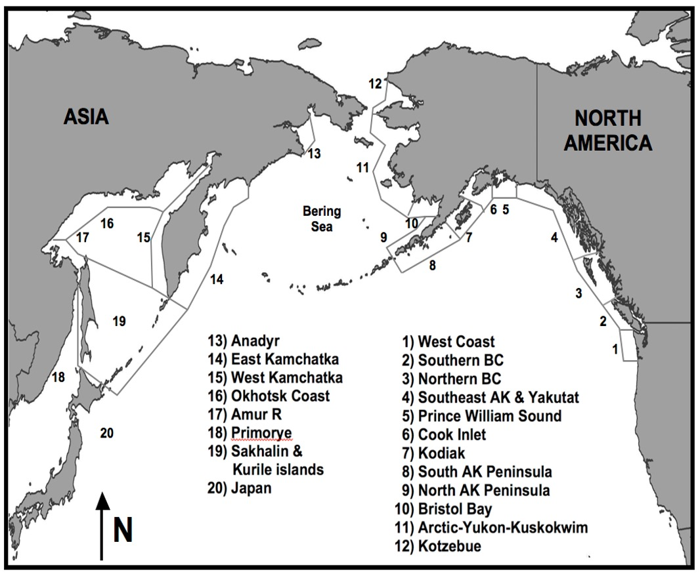
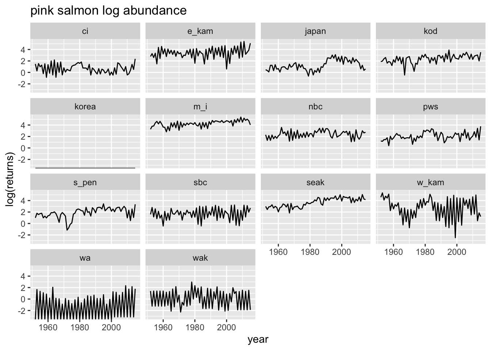
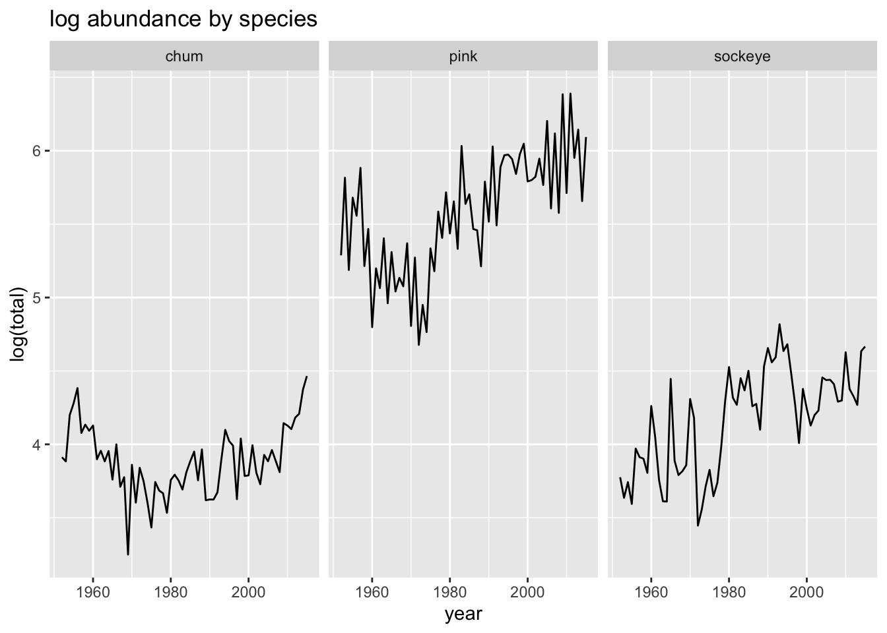
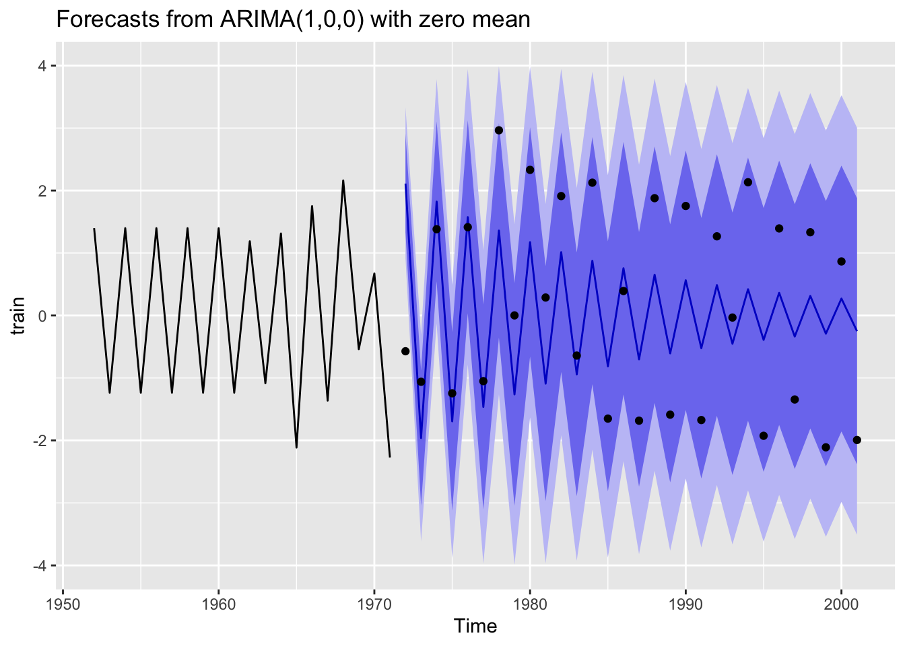

2 Lab Intro
Lab 1 Forecasting with ARIMA models
For this lab you will use the material you have learned in the first 3 lectures to explore features of time series of salmon in the North Pacific (Alaska and E Asia). Then you will use ARIMA models to create forecasts and ask a research question with those forecasts.
2.1 Teams
- Bristol Bay Data: Nick Chambers (SAFS), Liz Elmstrom (SAFS), Maria Kuruvilla (QERM)
- Bristol Bay Data: Eric French (Civil), Dylan Hubl (ESRM), Miranda Mudge (Molecular & Cell Bio)
- Ruggerone & Irvine Data: Zoe Rand (QERM), Madison Shipley (SAFS), Emma Timmins-Schiffman (Genome Sci)
- Ruggerone & Irvine Data: Terrance Wang (SAFS), Josh Zahner (SAFS), Karl Veggerby (SAFS)
2.2 References
Holmes, E. E. (2020) Fisheries Catch Forecasting https://fish-forecast.github.io/Fish-Forecast-Bookdown
Hyndman, R.J., & Athanasopoulos, G. (2018) Forecasting: principles and practice, 2nd edition, OTexts: Melbourne, Australia. https://otexts.com/fpp2/.
Plus the lecture material on the ATSA website.
2.3 Type of questions you might ask
“Compare the accuracy of forecasts using best fit ARIMA models for pink salmon using the different regions in the Ruggerone & Irvine data. Is forecast accuracy is different for different regions?”
“Compare the accuracy of total abundance forecasts using ARIMA models for Bristol Bay sockeye rivers and compare to the AKFW and UW FRI forecasts.”
“Compare the accuracy of age-group forecasts using ARIMA models for Bristol Bay sockeye and compare to the AKFW and UW FRI forecasts.”
“Use the Ruggerone & Irvine data and ARIMA models to study the autoregressive structure of pink, chum and sockeye. Are there differences by region (AK verus E Asia)?”
“Compare the forecasts of total North Pacific pink and chum using 5, 10, 15, and 20 years of training data. Does forecast accuracy increase with more training data?”
“Create 1-year forecasts of total North Pacific pink salmon using 20 years of training data for all of the Ruggerone and Irvine data. Is forecast error correlated with the PDO?”
2.4 Bristol Bay Sockeye data
The bristol_bay_data_plus_covariates.rds file has Bristol Bay sockeye abundance for 9 rivers for 4 age-groups. The data are from Ovando et al 2021 Improving forecasts of sockeye salmon (Oncorhynchus nerka) with parametric and nonparametric models DOI: 10.1139/cjfas-2021-0287. You’ll find a copy in the lab folder. The data file also has the covariates for year that the smolts enter the ocean as used in Ovando et al.
Load the data.
The data you will most likely want are
ret_yrThe year the spawners return to the spawning groundsretThe returns (number of fish in 1000s)systemThe river nameage_groupThe age_groupforecast.adfwThe forecast from AK Fish and Wildlifeforecast.friThe forecast from UW Fisheries Research Instituteenv_*are some covariates at the year the age group entered the ocean
In the data file, the age group designation is “a.b” where “a” is number of years in freshwater and “b” is number of years in the ocean. The age of the spawners in then a+b.

The data
colnames: brood_yr ret_yr system fw_age o_age age_group ret forecast.adfw forecast.fri env_pdo env_sst env_slp env_upstr system (river): Igushik Wood Nushagak Kvichak Naknek Egegik Ugashik age groups: Some plots of the Bristol Bay data. Hmm there is a NA that was replaced with 0 it looks like.


2.4.1 Some subsets of the data
Here are some subsets of the data that you might want to use.
Log total by age group
# A tibble: 6 × 3
# Groups: age_group [1]
age_group ret_yr lntotal
<chr> <dbl> <dbl>
1 1.2 1963 7.49
2 1.2 1964 8.50
3 1.2 1965 7.22
4 1.2 1966 7.18
5 1.2 1967 6.88
6 1.2 1968 8.11Log total by river
# A tibble: 6 × 3
# Groups: system [1]
system ret_yr lntotal
<chr> <dbl> <dbl>
1 Egegik 1963 7.54
2 Egegik 1964 7.55
3 Egegik 1965 8.55
4 Egegik 1966 7.95
5 Egegik 1967 7.41
6 Egegik 1968 6.88Compare fish that spend 2 years in ocean versus those that spend 3 years.
# A tibble: 6 × 4
# Groups: system, ocean_years [1]
system ocean_years ret_yr lntotal
<chr> <chr> <dbl> <dbl>
1 Egegik 2-yr-ocean 1963 7.02
2 Egegik 2-yr-ocean 1964 7.29
3 Egegik 2-yr-ocean 1965 8.34
4 Egegik 2-yr-ocean 1966 5.96
5 Egegik 2-yr-ocean 1967 6.58
6 Egegik 2-yr-ocean 1968 6.35Get one time series and split into train and test. Each with 10 years.
2.5 Ruggerone & Irvine: Salmon in the North Pacific
The data set Data_Images/ruggerone_data.rds has total abundance of natural spawners (not hatchery) from 15 regions in the N Pacific. These are data provided with Ruggerone, G. and Irvine, J. 2018. Numbers and biomass of natural- and hatchery-origin Pink, Chum, and Sockeye Salmon in the North Pacific Ocean, 1925-2015. Marine and Coastal Fisheries: Dynamics, Management, and Ecosystem Science 10. DOI: 10.1002/mcf2.10023. Open Access.
Load the data

| region in data file | desciption | regions in map |
|---|---|---|
| japan | Japan & South Korea | 20 and 21 |
| m_i | Russian Mainland & Islands | 13, 16, 17 18, 19 |
| w_kam | Western Kamchatka | 15 |
| e_kam | Eastern Kamchatka | 14 |
| wak | Western Alaska | 9, 10, 11, 12 |
| s_pen | Southern Alaska Peninsula | 8 |
| kod | Kodiak | 7 |
| ci | Cook Inlet | 6 |
| pws | Prince William Sound | 5 |
| seak | Southeast Alaska | 4 |
| nbc | Northern British Columbia | 3 |
| sbc | Southern British Columbia | 2 |
| wa | Washington State | 1 |
| wc | West Coast USA | mislabeled on map |
| cak (not in data file) | Central Alaska | 5, 6, 7, 8 |
2.5.1 Ruggerone and Irvine data
colnames: year region returns species species: pink chum sockeye regions: ci e_kam japan kod korea m_i nbc pws sbc seak s_pen wa wak w_kam wc 2.5.2 Some plots of the Ruggerone and Irvine data.


2.5.3 Some subsets of the data
Here are some subsets of the data that you might want to use.
Log total North Pacific pink, chum, sockeye
# A tibble: 6 × 3
# Groups: species [1]
species year lntotal
<chr> <dbl> <dbl>
1 chum 1952 3.91
2 chum 1953 3.88
3 chum 1954 4.20
4 chum 1955 4.28
5 chum 1956 4.38
6 chum 1957 4.08Log North Pacific pink
# A tibble: 6 × 5
year region returns species lnreturns
<dbl> <chr> <dbl> <chr> <dbl>
1 1952 ci 4.36 pink 1.47
2 1953 ci 1.30 pink 0.264
3 1954 ci 4.67 pink 1.54
4 1955 ci 2.67 pink 0.981
5 1956 ci 3.57 pink 1.27
6 1957 ci 0.804 pink -0.218Total in some bigger areas
# A tibble: 6 × 4
# Groups: area, species [1]
area species year lntotal
<chr> <chr> <dbl> <dbl>
1 Alaska chum 1952 2.83
2 Alaska chum 1953 2.77
3 Alaska chum 1954 2.92
4 Alaska chum 1955 2.47
5 Alaska chum 1956 2.81
6 Alaska chum 1957 2.892.6 Example analysis
Get one time series out of ruggerone_data
# A tibble: 6 × 2
year lnreturns
<dbl> <dbl>
1 1952 1.40
2 1953 -1.24
3 1954 1.40
4 1955 -1.24
5 1956 1.40
6 1957 -1.24Make a time series object and divide into train and test data.
Fit a model with auto.arima() in the forecast package.
Series: train
ARIMA(1,0,0) with zero mean
Coefficients:
ar1
-0.9293
s.e. 0.0725
sigma^2 = 0.3815: log likelihood = -19.22
AIC=42.45 AICc=43.15 BIC=44.44Plot a 30-year forecast against the test data.
Attaching package: 'zoo'The following objects are masked from 'package:base':
as.Date, as.Date.numeric